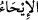

BENİM VE SENİN İÇİN
GÖZ AYDINLIĞIDIR!
7. Mûsâ’nın anasına: Onu emzir, kendisine zarar geleceğinden endişelendiğinde
onu denize (Nil nehrine) bırakıver, hiç korkup kaygılanma, çünkü biz onu sana geri
vereceğiz ve onu peygamberlerden biri yapacağız, diye bildirdik.
8. Nihâyet Firavun âilesi onu yitik çocuk olarak (nehirden) aldı. O, sonunda
kendileri için bir düşman ve bir tasa olacaktı. Şüphesiz Firavun ile Hâmân ve
askerleri yanlış yolda idiler.
9. Firavun’un karısı (sepetin içinden erkek çocuk çıkınca kocasına:) Benim ve
senin için göz aydınlığıdır! Onu öldürmeyiniz, belki bize faydası dokunur, ya da onu
evlât ediniriz, dedi. Halbuki onlar (işin sonunu) sezemiyorlardı.
“Mûsâ’nın anasına: … bildirdik.”
Mûsâ’nın anasının ismi “
(Yâruhâ/Yokevet)’dır. Başka rivâyetler de vardır.[86]
Mûsâ’nın anası Levi b. Ya’kub (a.s.)’ın evlatlarındandı.
“
(vahiy)” in asıl anlamı, süratle işâret etmek demektir ve her gizli uyarı için
kullanılır. “
(bildirmek)” ise gizlice bildirmek ve haber vermek anlamına gelir.
Râğıb İsfahânî özetle der ki: “Peygamberlere ve velilere ilkâ edilen ilâhî kelâma
“vahiy” denir ve şu şekillerde olur:
1. Şahsı görülen ve sesi duyulan bir elçi vâsıtasıyla olur: Cebrâîl (a.s.)’ın Peygamber
(s.a.)’e muayyen bir sûret ve şekilde gelişinde olduğu gibi.
2. Şahsı muayyen olmayan birinden ilâhî kelamı işitmekle olur: Mûsâ (a.s.)’ın
Allah’ın kelâmını işitmesinde olduğu gibi.
3. Peygamber (s.a.)’in kalbine ilka edilerek olur. Nitekim Rasûlullah (s.a.): “Ruhu’l-
Kuds benim kalbime üfledi.”[87] buyurmuştur.
4. “Biz, Mûsâ’nın annesine… vahyettik” âyetinde olduğu gibi “ilham”la ya da Allah